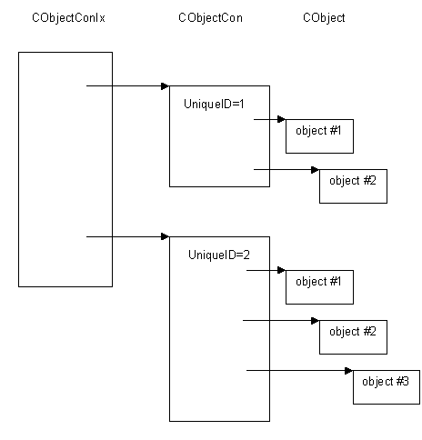

|
| |
All object containers must be held within a special type of container known as an object container index.
An object container index is an instance of a CObjectConIx class.
An object container index not only acts as a container for object containers, but also provides the mechanism through which object containers are created.
CObjectConIx::CreateL() creates an object container and is responsible for assigning a unique ID to it. This unique ID forms part of the identity of all reference counting objects which that object container will, in due course, hold.
For example, the Kernel creates a single object container index; from this it creates a number of object containers, each of which, in turn, holds reference counting objects. The following drawing shows the idea.

An object container index is implemented as a simple array where each element of the array contains a pointer to an object container. CObjectConIx::CreateL() constructs an object container, assigns a unique ID to it and adds it into the CObjectConIx array.
See also:
Copyright ©2002 Symbian Ltd. 6.1-00174 |
|